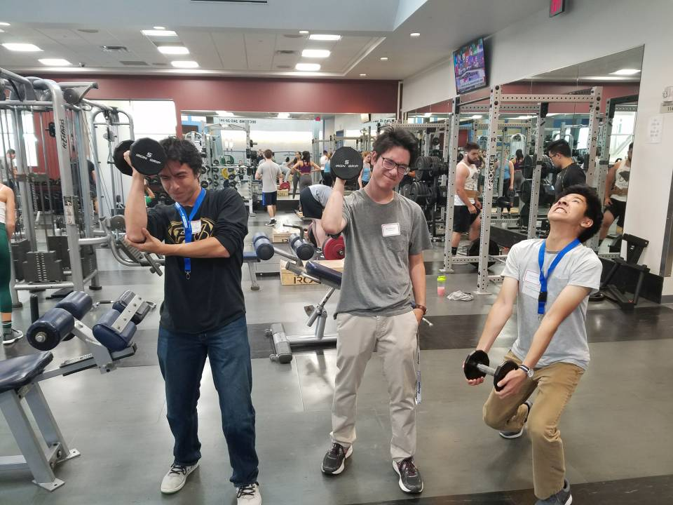

"We haven't been in here yet!""We haven't been in here yet!"
I was uneasy when coming to Mines. I didn’t really know what to expect and was worried about making friends. However, being just 30 minutes from my hometown put my mind a bit at ease knowing I’d still be able to stay connected to friends and family. I felt confident that my old friends would be able to still be there for me if I needed them, and that I’d be able to make new friends in the nerdy Mines atmosphere. I made a few quick connections at Mines, like in IDEAS when we went on a campus scavenger hunt to explore the campus. I was friendly with the guys I met there, and we managed to take the winning picture for the hunt. We were all weak and thought it’d be hilarious to poke fun of ourselves by taking a photo at the gym. After this, I felt even more comfortable and optimistic about the connections I would make.
Things didn’t go quite as planned. I struggled to adjust to the intensity of Mines and to continued having trouble meeting people and make connections, instead, I ended up falling back on old friends. This didn’t work out very well either though, because everyone is busy with their own lives and schoolwork. My friends grew distant, but I was still talking to them enough to know that they were really struggling in their own right. I always did my best to help people whenever they needed it, but all of a sudden I was in a position where they wouldn’t tell me enough so I could only watch from the sidelines as they succumbed to the pain. I started to feel isolated while also constantly worrying about people. I was growing weaker.
Imagery for the Stream Analogy
Imagery for the Stream Analogy
Over time, I started to realize that I needed to build on myself more. Having good friends is great and can definitely help give you strength, however, if that’s all you relly on then once outside forces start getting in the way then your supports are guaranteed to fall. The first step I took to gain my own strength was going to the gym. I didn’t want to be weak like I portrayed myself in the scavenger hunt, so I decided to put in the work to change. It was very hard to gain the habits, but now that I’ve successfully been training for months I can say for certain that I have grown stronger.
The process I went through is similar to one used in my IDEAS design project. Professor Colin Terry told my group an interesting analogy that became a core foundation of our design. Mental health is like a stream, where the further down you swim the heavy the currents get and provide the personal space and support necessary to keep people from getting washed away. Once I started to spend time working on myself, instead of others, I started to see improvement in my mental health. The workouts were a major part of treating myself while upstream and give me the strength to fight the stressful currents.
I also starting playing games again in order to de-stress. Homework is very important and I always got it done on time, however, being overworked is detrimental to mental health. Setting aside time for myself to chill out and play games was very important to get me into healthy mindsets again. It also helped lead to the proposal my group went with for the design project. I wanted to give people the space to de-stress while being around people, something I wish I was able to access. I combined all my previous experience with gaming to put together an idea for a community gaming cafe. The executive summary, shown below, highlights some key points from the design. For this project, I was the main person making design decisions through drawing floor plans and outlining features based on psychological research, in addition to my responsibilities as a project manager.
Drawing of items from "Jojo's Bizzare Adventure"
Drawing of items from "Jojo's Bizzare Adventure"
The start of my college career was a rocky one, however, I managed to regain my footing and find some personal growth along the way. I’ve gotten stronger both physically and mentally. I’ve managed to build my own supports that I can rely on. I still have plenty of great friends whom I love and am grateful to have my back, but it was definitely necessary for me to find my own personal strength as well. My initial progress and continued plans to grow are inspired in part by a show called “Jojo’s Bizzare Adventure”, which helped keep me sane in some of my darker times. It shows extremely strong protagonists who can face any challenge with a badass pose and always change lives for the better. I found role models in these characters, and they inspired me to gain the strength necessary to be like them. I’ve set the building blocks down that path and will be continuing to build on myself to reach for greater heights.